<!DOCTYPE html>
<html lang="en">
  <head>
    <meta charset="utf-8" />
    <meta name="viewport" content="width=device-width, initial-scale=1.0, maximum-scale=1.0, user-scalable=no" />

    <title></title>
    <link rel="stylesheet" href="dist/reveal.css" />
    <link rel="stylesheet" href="dist/theme/white.css" id="theme" />
    <link rel="stylesheet" href="plugin/highlight/zenburn.css" />
	<link rel="stylesheet" href="css/layout.css" />
	<link rel="stylesheet" href="plugin/customcontrols/style.css">
	<link rel="stylesheet" href="plugin/chalkboard/style.css">


    <script defer src="dist/fontawesome/all.min.js"></script>

	<script type="text/javascript">
		var forgetPop = true;
		function onPopState(event) {
			if(forgetPop){
				forgetPop = false;
			} else {
				parent.postMessage(event.target.location.href, "app://obsidian.md");
			}
        }
		window.onpopstate = onPopState;
		window.onmessage = event => {
			if(event.data == "reload"){
				window.document.location.reload();
			}
			forgetPop = true;
		}

		function fitElements(){
			const itemsToFit = document.getElementsByClassName('fitText');
			for (const item in itemsToFit) {
				if (Object.hasOwnProperty.call(itemsToFit, item)) {
					var element = itemsToFit[item];
					fitElement(element,1, 1000);
					element.classList.remove('fitText');
				}
			}
		}

		function fitElement(element, start, end){

			let size = (end + start) / 2;
			element.style.fontSize = `${size}px`;

			if(Math.abs(start - end) < 1){
				while(element.scrollHeight > element.offsetHeight){
					size--;
					element.style.fontSize = `${size}px`;
				}
				return;
			}

			if(element.scrollHeight > element.offsetHeight){
				fitElement(element, start, size);
			} else {
				fitElement(element, size, end);
			}		
		}


		document.onreadystatechange = () => {
			fitElements();
			if (document.readyState === 'complete') {
				if (window.location.href.indexOf("?export") != -1){
					parent.postMessage(event.target.location.href, "app://obsidian.md");
				}
				if (window.location.href.indexOf("print-pdf") != -1){
					let stateCheck = setInterval(() => {
						clearInterval(stateCheck);
						window.print();
					}, 250);
				}
			}
	};


        </script>
  </head>
  <body>
    <div class="reveal">
      <div class="slides"><section ><section data-markdown><script type="text/template"><!-- .slide: class="drop" -->
<div class="" style="position: absolute; left: 0px; top: 0px; height: 1080px; width: 1920px; min-height: 1080px; display: flex; flex-direction: column; align-items: center; justify-content: center" absolute="true">

# Fundamentals of (Online ((Social) Media)) Network Analysis

## Lecture 2

Epistemological/methodological challenges of network science in computational social science, network science as a way to handle organised complexity, research examples
</div></script></section><section data-markdown><script type="text/template"><!-- .slide: class="drop" -->
<div class="" style="position: absolute; left: 0px; top: 0px; height: 1080px; width: 1920px; min-height: 1080px; display: flex; flex-direction: column; align-items: center; justify-content: center" absolute="true">

# Who is this guy?

Dr. Felix Victor Münch

Media Research Methods Lab & Social Media Observatory of the Research Institute Social Cohesion 

@ Leibniz-Institute for Media Research | Hans-Bredow-Institut
</div></script></section><section data-markdown><script type="text/template"><!-- .slide: class="drop" -->
<div class="" style="position: absolute; left: 0px; top: 0px; height: 1080px; width: 1920px; min-height: 1080px; display: flex; flex-direction: column; align-items: center; justify-content: center" absolute="true">

# The Plan

1. Computational Social Science
2. Today's Example: The Networked Public Sphere
3. Organised Complexity and Network Science
4. Challenges in Network Science for Computational Communication Science
5. A Possible Methodological Framework
6. Example 1: Measuring Virality of Communication
7. Example 2: Mapping a Public Sphere
8. What is it good for?

Afterwards:

Practical for students from last time
</div></script></section></section><section ><section data-markdown><script type="text/template"><!-- .slide: class="drop" -->
<div class="" style="position: absolute; left: 0px; top: 0px; height: 1080px; width: 1920px; min-height: 1080px; display: flex; flex-direction: column; align-items: center; justify-content: center" absolute="true">

# 1. Computational Social Sciences
</div></script></section><section data-markdown><script type="text/template"><!-- .slide: class="drop" -->
<div class="" style="position: absolute; left: 0px; top: 0px; height: 1080px; width: 1920px; min-height: 1080px; display: flex; flex-direction: column; align-items: center; justify-content: center" absolute="true">

## How to become a "Computational Social/Communication Scientist"?

**C.V. tl;dr:**

Physics B.Sc. -> Journalism M.A. -> Online Brand Communication Agency

-> PhD @ Queensland University of Technology, Digital Media Research Centre

## 🤷‍♂️
</div></script></section><section data-markdown><script type="text/template"><!-- .slide: class="drop" -->
<div class="" style="position: absolute; left: 0px; top: 0px; height: 1080px; width: 1920px; min-height: 1080px; display: flex; flex-direction: column; align-items: center; justify-content: center" absolute="true">

## What is Computational Social Science?

Social Sciences by computational means, thereby
* Interdisciplinary
* Multi-methods, sometimes mixed methods
* **neither quantitative nor qualitative**
</div></script></section><section data-markdown><script type="text/template"><!-- .slide: class="drop" -->
<div class="" style="position: absolute; left: 0px; top: 0px; height: 1080px; width: 1920px; min-height: 1080px; display: flex; flex-direction: column; align-items: center; justify-content: center" absolute="true">

## What is Computational Social Science?

### Interdisciplinary

* Social Sciences
* Communication Studies
* Computer Sciences
* Mathematics
* ...
</div></script></section><section data-markdown><script type="text/template"><!-- .slide: class="drop" -->
<div class="" style="position: absolute; left: 0px; top: 0px; height: 1080px; width: 1920px; min-height: 1080px; display: flex; flex-direction: column; align-items: center; justify-content: center" absolute="true">

## What is Computational Social Science?

### Mixed/Multi-Methods

* Content Analysis
* Natural Language Processing
* Machine Learning
* Network Analysis
* Surveys
* Questionnaires
* Data Donations
* ...
</div></script></section><section data-markdown><script type="text/template"><!-- .slide: class="drop" -->
<div class="" style="position: absolute; left: 0px; top: 0px; height: 1080px; width: 1920px; min-height: 1080px; display: flex; flex-direction: column; align-items: center; justify-content: center" absolute="true">

## What is Computational Social Science?

### Neither quant nor qual

### 🤪

Well, this needs a whole lecture … this lecture
</div></script></section></section><section ><section data-markdown><script type="text/template"><!-- .slide: class="drop" -->
<div class="" style="position: absolute; left: 0px; top: 0px; height: 1080px; width: 1920px; min-height: 1080px; display: flex; flex-direction: column; align-items: center; justify-content: center" absolute="true">

# 2. Today's example: The Networked Public Sphere
</div></script></section><section data-markdown><script type="text/template"><!-- .slide: class="drop" -->
<div class="" style="position: absolute; left: 0px; top: 0px; height: 1080px; width: 1920px; min-height: 1080px; display: flex; flex-direction: column; align-items: center; justify-content: center" absolute="true">

## The Public Sphere

<split even>


</split>

<sub>after Habermas (2006), from Bruns (2008), from McQuail (2010) respectively</sub>

<aside class="notes"><p>Habermas: centre-periphery structure around the political system, actors on virtual stage; speaking to a silent audience</p>
<p>Bruns: networked public sphere, mainstream &#39;mountain&#39;: large audience, low engagement, special interest slopes: small audiences, high engagement, individuals densely inter-connected by common interests however</p>
<p>McQuail: Development alongside media evolution: early mass media: unitary; multi-channel-media: pluralism; today: core-periphery model, diverse, but still connected; future: total disconnect; breakup-model</p>
</div></aside></script></section><section data-markdown><script type="text/template"><!-- .slide: class="drop" -->
<div class="" style="position: absolute; left: 0px; top: 0px; height: 1080px; width: 1920px; min-height: 1080px; display: flex; flex-direction: column; align-items: center; justify-content: center" absolute="true">


<aside class="notes"><p>Some might say, this is a bad thing</p>
</div></aside></script></section><section data-markdown><script type="text/template"><!-- .slide: class="drop" -->
<div class="" style="position: absolute; left: 0px; top: 0px; height: 1080px; width: 1920px; min-height: 1080px; display: flex; flex-direction: column; align-items: center; justify-content: center" absolute="true">


<aside class="notes"><p>because if people don&#39;t talk to each other anymore and don&#39;t have common ground to do so, this leads to unresolvable conflicts</p>
</div></aside></script></section><section data-markdown><script type="text/template"><!-- .slide: class="drop" -->
<div class="" style="position: absolute; left: 0px; top: 0px; height: 1080px; width: 1920px; min-height: 1080px; display: flex; flex-direction: column; align-items: center; justify-content: center" absolute="true">
<!-- .slide: class="drop" -->
<div class="" style="position: absolute; left: 0px; top: 0px; height: 1080px; width: 1920px; min-height: 1080px; display: flex; flex-direction: column; align-items: center; justify-content: center" absolute="true">


</div>
<aside class="notes"><p>So, if this dystopian vision by McQuail might be true, we should do something about it, or at least find out whether he&#39;s right</p>
</div></aside></script></section><section data-markdown><script type="text/template"><!-- .slide: class="drop" -->
<div class="" style="position: absolute; left: 0px; top: 0px; height: 1080px; width: 1920px; min-height: 1080px; display: flex; flex-direction: column; align-items: center; justify-content: center" absolute="true">


<aside class="notes"><p>And this is the point where this snippet from the Original Star Trek Series from the 60s is still <em>literally</em> science fiction: we would not have anything such as a &#39;sociological computer&#39; …</p>
</div></aside></script></section><section data-markdown><script type="text/template"><!-- .slide: class="drop" -->
<div class="" style="position: absolute; left: 0px; top: 0px; height: 1080px; width: 1920px; min-height: 1080px; display: flex; flex-direction: column; align-items: center; justify-content: center" absolute="true">


<aside class="notes"><p>nor can we assume that any such thing might be able to solve a problem that is so human in its nature.
However, if such a thing should ever exist, I&#39;m sure it would make use of network science. I hope I can convince you with this talk, and perhaps with my thesis, that it will become, or should become, one of the most important auxiliary disciplines of media and communication studies, comparable to statistics.</p>
</div></aside></script></section></section><section ><section data-markdown><script type="text/template"><!-- .slide: class="drop" -->
<div class="" style="position: absolute; left: 0px; top: 0px; height: 1080px; width: 1920px; min-height: 1080px; display: flex; flex-direction: column; align-items: center; justify-content: center" absolute="true">

# 3. Organised Complexity and Network Science

<aside class="notes"><ul>
<li>Full overview not possible here</li>
<li>thesis more comprehensive</li>
<li>just try to make clear why it is so suited to these kind of problems</div></li>
</ul>
</aside></script></section><section data-markdown><script type="text/template"><!-- .slide: class="drop" -->
<div class="" style="position: absolute; left: 0px; top: 0px; height: 1080px; width: 1920px; min-height: 1080px; display: flex; flex-direction: column; align-items: center; justify-content: center" absolute="true">

## Organised Complexity

Three eras in the history of science (Warren Weaver, 1948):

* simplicity: two variables (e.g., length and force of a leaver) -> simple calculus
* disorganised complexity: averages, distributions (e.g., audience size and ratings) -> statistics
* organised complexity:

	> _This was a new science focused on problems where the identity of the elements involved in a system, and their patterns of interactions, could no longer be ignored. … a new math needed to emerge. (Hidalgo, 2016, p. 2)_

=> **Network Science**, Agent Based Modeling, Machine Learning, …

<aside class="notes"><ul>
<li>simplicity: e.g. length of and force applied to a leaver</li>
<li>disorganised complexity: audience size and ratings of a broadcast TV show</li>
<li>from slide</div></li>
</ul>
</aside></script></section><section data-markdown><script type="text/template"><!-- .slide: class="drop" -->
<div class="" style="position: absolute; left: 0px; top: 0px; height: 1080px; width: 1920px; min-height: 1080px; display: flex; flex-direction: column; align-items: center; justify-content: center" absolute="true">

## Network Science

Networks:

* “mathematical objects that help us keep track of the identity of the elements involved in a system and their patterns of interaction”
* “ideal structures to describe problems of organized complexity” (Hidalgo, 2016, p. 2)
</div></script></section><section data-markdown><script type="text/template"><!-- .slide: class="drop" -->
<div class="" style="position: absolute; left: 0px; top: 0px; height: 1080px; width: 1920px; min-height: 1080px; display: flex; flex-direction: column; align-items: center; justify-content: center" absolute="true">

## Network Science


<aside class="notes"><ul>
<li>possible, e.g., categorisation of smaller-scale communication patterns, and quantitative ways to measure these</li>
<li>e.g. polarised crowd, broadcast networks</li>
</ul>
<ul>
<li>allows to look at group or even society-wide patterns, while preserving complex properties of individuals</div></li>
</ul>
</aside></script></section><section data-markdown><script type="text/template"><!-- .slide: class="drop" -->
<div class="" style="position: absolute; left: 0px; top: 0px; height: 1080px; width: 1920px; min-height: 1080px; display: flex; flex-direction: column; align-items: center; justify-content: center" absolute="true">

## Problem: Disciplinary Divides


Problems in epistemology, methodology, teleology, education, and research training

<aside class="notes"><p>identified in thesis: not only education and training, but more important: differences in understanding of &#39;what you can know&#39;, &#39;how knowledge is gained&#39;, &#39;for what purpose we gain knowledge and why things happen&#39;</p>
</div></aside></script></section></section><section ><section data-markdown><script type="text/template"><!-- .slide: class="drop" -->
<div class="" style="position: absolute; left: 0px; top: 0px; height: 1080px; width: 1920px; min-height: 1080px; display: flex; flex-direction: column; align-items: center; justify-content: center" absolute="true">

# 4. Challenges in Network Science for Computational Communication Sciences
</div></script></section><section data-markdown><script type="text/template"><!-- .slide: class="drop" -->
<div class="" style="position: absolute; left: 0px; top: 0px; height: 1080px; width: 1920px; min-height: 1080px; display: flex; flex-direction: column; align-items: center; justify-content: center" absolute="true">

## Lack of a Common Understanding of Methodology and Common Goals


Notes:
- many social scientists/media and communication scholars are not used to complex method development for its own sake
- we need to improve ability of researchers from network science-related disciplines & media and communication studies to integrate each others work,
- dealing with big data on public communication.
- needs methodological framework
</div></script></section><section data-markdown><script type="text/template"><!-- .slide: class="drop" -->
<div class="" style="position: absolute; left: 0px; top: 0px; height: 1080px; width: 1920px; min-height: 1080px; display: flex; flex-direction: column; align-items: center; justify-content: center" absolute="true">

## Challenge 1/3: How to Translate Theory?

How can we interpret established concepts and theories regarding public communication from the social sciences and media and communication studies as theories about the structural dynamics of networks?
</div></script></section><section data-markdown><script type="text/template"><!-- .slide: class="drop" -->
<div class="" style="position: absolute; left: 0px; top: 0px; height: 1080px; width: 1920px; min-height: 1080px; display: flex; flex-direction: column; align-items: center; justify-content: center" absolute="true">

## Challenge 2/3: How to Apply Network Science?

How can we apply network science methods to analyse the structural dynamics of networks in online public communication on a scale of whole societies from a perspective that tries to build upon, reject, or extend traditional media and communication studies theory?
</div></script></section><section data-markdown><script type="text/template"><!-- .slide: class="drop" -->
<div class="" style="position: absolute; left: 0px; top: 0px; height: 1080px; width: 1920px; min-height: 1080px; display: flex; flex-direction: column; align-items: center; justify-content: center" absolute="true">

## Challenge 3/3: But Why?

Can this analysis be validated by its utility in confirming established theories or by leading to new theories about online public communication and the public sphere?
</div></script></section></section><section ><section data-markdown><script type="text/template"><!-- .slide: class="drop" -->
<div class="" style="position: absolute; left: 0px; top: 0px; height: 1080px; width: 1920px; min-height: 1080px; display: flex; flex-direction: column; align-items: center; justify-content: center" absolute="true">

# 5. A possible Methodological Framework

<aside class="notes"><ul>
<li>underestimated its importance first</li>
<li>first project started to make me question others, then my understanding of research, then my identity as a researcher/scientist</li>
<li>actually developed alongside the studies and only started to make sense in the end</li>
<li>became major outcome of this Project</li>
<li>I see it as a fundamental necessity for the sustainable integration of network science into media and communication studies</div></li>
</ul>
</aside></script></section><section data-markdown><script type="text/template"><!-- .slide: class="drop" -->
<div class="" style="position: absolute; left: 0px; top: 0px; height: 1080px; width: 1920px; min-height: 1080px; display: flex; flex-direction: column; align-items: center; justify-content: center" absolute="true">

## A Possible Methodological Framework


Synthesising ideas by

* Berry (2011) on the computational turn in the humanities;
* Halavais (2015) on Big Data interlinking the general with the particular;
* Sechrest & Sidani (1995) on a "false dichotomy" of qual vs quant
* Onwuegbuzie & Leech (2005) on pragmatism as a necessity;
* Dixon (2012) on an epistemology of patterns;


<aside class="notes"><ul>
<li>Berry: computational methods became fundamental to concepts in the humanities</li>
<li>Halavais: big data has potential to connect grand theory with everyday individual behaviour, allows to investigate influence of outliers, which are often driving change</li>
<li>makes false dichotomy between qual and quant (as discussed by Sechrest &amp; Sidani) more obvious</li>
<li>and also the need for pragmatism, to disentangle epistemology from methodology</li>
<li>furthermore, especially for network science: epistemology of patterns, patterns are not the result but a means, a method, vocabulary</div></li>
</ul>
</aside></script></section><section data-markdown><script type="text/template"><!-- .slide: class="drop" -->
<div class="" style="position: absolute; left: 0px; top: 0px; height: 1080px; width: 1920px; min-height: 1080px; display: flex; flex-direction: column; align-items: center; justify-content: center" absolute="true">


<aside class="notes"><ul>
<li>reflection on patterns opens possibility to integrate practices from the whole spectrum of academic research, as made necessary by the computational turn and big data</div></li>
</ul>
</aside></script></section><section data-markdown><script type="text/template"><!-- .slide: class="drop" -->
<div class="" style="position: absolute; left: 0px; top: 0px; height: 1080px; width: 1920px; min-height: 1080px; display: flex; flex-direction: column; align-items: center; justify-content: center" absolute="true">


<aside class="notes"><ul>
<li>if we recognise that one side of the spectrum tends to use more abductive reasoning, which is the formal way to refer to the hunches and guesses made in all disciplines to generate promising hypotheses</li>
<li>and the other side lays a stronger focus on deduction/induction to catch up with shorter, what I call &#39;jumps over abductive gap&#39;</div></li>
</ul>
</aside></script></section><section data-markdown><script type="text/template"><!-- .slide: class="drop" -->
<div class="" style="position: absolute; left: 0px; top: 0px; height: 1080px; width: 1920px; min-height: 1080px; display: flex; flex-direction: column; align-items: center; justify-content: center" absolute="true">


<aside class="notes"><ul>
<li>then patterns can be seen as a method/vocabulary</li>
<li>heuristic for promising hypotheses based on human/machine learnings ability to spot them</li>
<li>difference between disciplines lies in generalisability and timeliness that they aim for (explain)</div></li>
</ul>
</aside></script></section><section data-markdown><script type="text/template"><!-- .slide: class="drop" -->
<div class="" style="position: absolute; left: 0px; top: 0px; height: 1080px; width: 1920px; min-height: 1080px; display: flex; flex-direction: column; align-items: center; justify-content: center" absolute="true">


<aside class="notes"><ul>
<li>the deductive and inductive reasoning to catch up with the abductions is then done with more responsive (clinical aka qualitative) (better for exploration), or rule-based methods (formulaic aka quantitative) (better for replication for example), again with a preference depending on where in the spectrum a researcher is</div></li>
</ul>
</aside></script></section><section data-markdown><script type="text/template"><!-- .slide: class="drop" -->
<div class="" style="position: absolute; left: 0px; top: 0px; height: 1080px; width: 1920px; min-height: 1080px; display: flex; flex-direction: column; align-items: center; justify-content: center" absolute="true">


<aside class="notes"><p>In the end every academic practice is a cycle of abductive reasoning with patterns and inductive/deductive reasoning with more rule-based or responsive methods
In case of combining network science methods &amp; media studies for this project:</p>
<ul>
<li>start with hypotheses</li>
<li>find rule-based methods to test hypotheses</li>
<li>leads to results that lead via inductive reasoning (repetition) to patterns</li>
<li>abduction delivers new hypotheses
provides us, in a pragmatic worldview, with a scope to validate our methods by their usefulness to drive this research cycle.</div></li>
</ul>
</aside></script></section></section><section ><section data-markdown><script type="text/template"><!-- .slide: class="drop" -->
<div class="" style="position: absolute; left: 0px; top: 0px; height: 1080px; width: 1920px; min-height: 1080px; display: flex; flex-direction: column; align-items: center; justify-content: center" absolute="true">

# 6. Example 1: Measuring Communication Cascades

<aside class="notes"><ul>
<li>went through cycle two times: acute events (information diffusion, virality), national public sphere (communities, audiences, publics)</div></li>
</ul>
</aside></script></section><section data-markdown><script type="text/template"><!-- .slide: class="drop" -->
<div class="" style="position: absolute; left: 0px; top: 0px; height: 1080px; width: 1920px; min-height: 1080px; display: flex; flex-direction: column; align-items: center; justify-content: center" absolute="true">

## Cases

Three media items disseminated on Twitter, related to acute events:

* #sydneysiege – most used
* #illridewithyou – perceived as most 'viral'
* link to a petition to repeat the Brexit referendum – interesting for comparison

<aside class="notes"><ul>
<li>sydneysiege: terrorist attack sydney end of 2014, most popular hashtags</li>
<li>illridewithyou: lead to islamophobic reactions, counterreaction as a hashtag offering support in public transport</li>
<li>link to petition: petition website went down after result of Brexit referendum was announced
For all: shares on Twitter, and following networks by first 10,000 participating accounts collected</div></li>
</ul>
</aside></script></section><section data-markdown><script type="text/template"><!-- .slide: class="drop" -->
<div class="" style="position: absolute; left: 0px; top: 0px; height: 1080px; width: 1920px; min-height: 1080px; display: flex; flex-direction: column; align-items: center; justify-content: center" absolute="true">

## What is virality (aka contagion)?

Three perspectives:

* virality of an item
* virality of the structure of a diffusion tree
* qualitative differences: simple (one exposure) vs. complex (threshold models) contagion

<aside class="notes"><p>leading goal: better understand notions of virality from a network perspective</p>
<ul>
<li>three selected</div></li>
</ul>
</aside></script></section><section data-markdown><script type="text/template"><!-- .slide: class="drop" -->
<div class="" style="position: absolute; left: 0px; top: 0px; height: 1080px; width: 1920px; min-height: 1080px; display: flex; flex-direction: column; align-items: center; justify-content: center" absolute="true">

### Structural Virality (Avg. Shortest Path Length)


<sub>after Goel et al. (2015)</sub>

<aside class="notes"><ul>
<li>Goel et al.: proposal structural virality measure: avg short. path length</li>
<li>intuitively makes sense</li>
<li>left: broadcast: avg. 2</li>
<li>right: more &#39;viral&#39;: avg. higher than two</div></li>
</ul>
</aside></script></section><section data-markdown><script type="text/template"><!-- .slide: class="drop" -->
<div class="" style="position: absolute; left: 0px; top: 0px; height: 1080px; width: 1920px; min-height: 1080px; display: flex; flex-direction: column; align-items: center; justify-content: center" absolute="true">

## Selected Results
</div></script></section><section data-markdown><script type="text/template"><!-- .slide: class="drop" -->
<div class="" style="position: absolute; left: 0px; top: 0px; height: 1080px; width: 1920px; min-height: 1080px; display: flex; flex-direction: column; align-items: center; justify-content: center" absolute="true">

### Connected Components

<split even>


</split>

<sub>Diffusion trees reconstructed from **first 10,000 participating accounts** in each case.</sub>

- reconstructed diffusion network, based on assumption that the last exposure triggered the reshare
- colour by connected component
- decreasing dominance of largest components
- increasing number of components, equivalent to number of entry points -> more viral, more 'organic growth', less viral, more 'outside influence'

<aside class="notes"><ul>
<li>in Brexit case explainable by the fact that a lot of shares might be simply triggered by a tweet button on the petition website</div></li>
</ul>
</aside></script></section><section data-markdown><script type="text/template"><!-- .slide: class="drop" -->
<div class="" style="position: absolute; left: 0px; top: 0px; height: 1080px; width: 1920px; min-height: 1080px; display: flex; flex-direction: column; align-items: center; justify-content: center" absolute="true">

### Structural Virality (Avg. Shortest Path Length)

<split even>


</split>

<aside class="notes"><ul>
<li>again confirmation of intuition</li>
<li>structural virality the highest for illridewithyou, the lowest for petition</div></li>
</ul>
</aside></script></section><section data-markdown><script type="text/template"><!-- .slide: class="drop" -->
<div class="" style="position: absolute; left: 0px; top: 0px; height: 1080px; width: 1920px; min-height: 1080px; display: flex; flex-direction: column; align-items: center; justify-content: center" absolute="true">

### Influence Network

<split even >


</split>

- if I followed another account + this account posted item before I did -> connection
- gives up assumption of single exposure -> enables to analyse possible **complex contagion**
- observation: hashtags both more clustered -> denser underlying community structure in form of follows
</div></script></section><section data-markdown><script type="text/template"><!-- .slide: class="drop" -->
<div class="" style="position: absolute; left: 0px; top: 0px; height: 1080px; width: 1920px; min-height: 1080px; display: flex; flex-direction: column; align-items: center; justify-content: center" absolute="true">

### Complexity of Contagion/Exposures per Friend (Followee)

<split even>

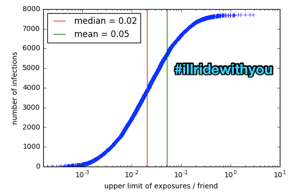

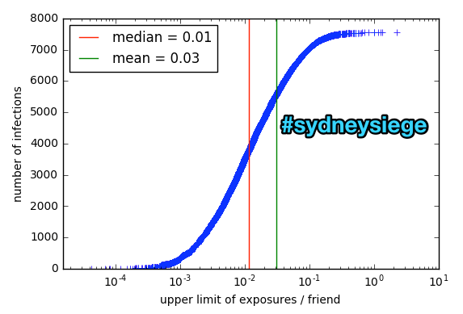

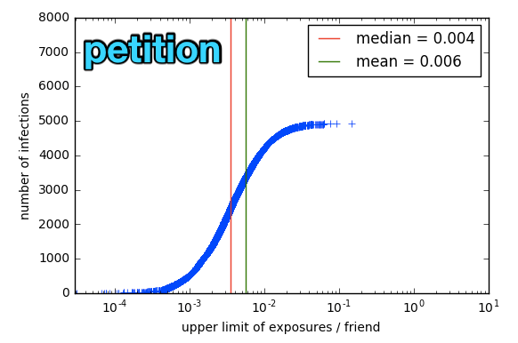


</split>


- the number of infections increases with the exposures to the respective item per friend
- could be understood as some form of 'peer pressure'
- average highest for illridewithyou (5 exposures per 100 friends)
- middle sydneysiege (3 exposures per 100 friends)
- far below for link (6 per 1000 friends)
</div></script></section><section data-markdown><script type="text/template"><!-- .slide: class="drop" -->
<div class="" style="position: absolute; left: 0px; top: 0px; height: 1080px; width: 1920px; min-height: 1080px; display: flex; flex-direction: column; align-items: center; justify-content: center" absolute="true">

### Complexity of Contagion/Exposures per Friend (Followee)


Limitation: the effect is hard to separate from the 'organic grown' nature of #illridewithyou
</div></script></section><section data-markdown><script type="text/template"><!-- .slide: class="drop" -->
<div class="" style="position: absolute; left: 0px; top: 0px; height: 1080px; width: 1920px; min-height: 1080px; display: flex; flex-direction: column; align-items: center; justify-content: center" absolute="true">

### Summary of Results
|                          | #illridewithyou | #sydneysiege | petition |
|:-------------------------|:----------------|:-------------|:---------|
| outside influence        | +               | ++           | +++      |
| structural virality      | +++             | ++           | +        |
| clustering\*             | +++             | +++          | +        |
| impact of single nodes\* | +++             | ++           | +        |
| timescales\*             | +               | ++           | +++      |
| **'virality'**           | **high**        | **medium**   | **low**  |
| **complexity of contagion**  | +++             | ++           | +        |

<sub>\*see Münch (2019)</sub>

<aside class="notes"><ul>
<li>summary: all results point to higher virality</li>
<li>except: higher complexity for illridewithyou appears counterintuitive first</li>
<li>in fact:  underlines together with clustering importance of underlying structures of attention</div></li>
</ul>
</aside></script></section><section data-markdown><script type="text/template"><!-- .slide: class="drop" -->
<div class="" style="position: absolute; left: 0px; top: 0px; height: 1080px; width: 1920px; min-height: 1080px; display: flex; flex-direction: column; align-items: center; justify-content: center" absolute="true">

## Application to Theory (example): Gatekeeping

<aside class="notes"><p>(besides clarifiying concepts of virality) closes circle to theory by providing base for thoughts on an extension of concept of gatekeeping</p>
</div></aside></script></section><section data-markdown><script type="text/template"><!-- .slide: class="drop" -->
<div class="" style="position: absolute; left: 0px; top: 0px; height: 1080px; width: 1920px; min-height: 1080px; display: flex; flex-direction: column; align-items: center; justify-content: center" absolute="true">

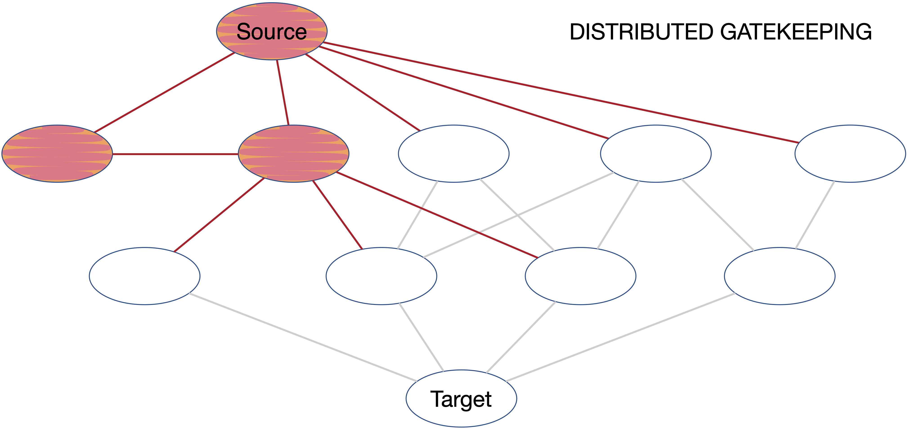


- concept of distributed gatekeeping in networks, based on limited attention space
- assumption for example: general average threshold of 2 to reshare an item
</div></script></section><section data-markdown><script type="text/template"><!-- .slide: class="drop" -->
<div class="" style="position: absolute; left: 0px; top: 0px; height: 1080px; width: 1920px; min-height: 1080px; display: flex; flex-direction: column; align-items: center; justify-content: center" absolute="true">

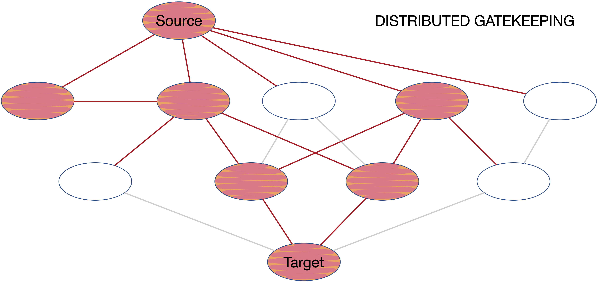


One node acts as a quasi-gatekeeper to get the message through to the target, based on properties of the node (lower threshold), but also on position in the network (node on the far right would not succeed)

<aside class="notes"><ul>
<li>we can see that underlying, long-term network structure is important at small scales</li>
<li>also possible to see the nodes as groups of nodes -&gt; leads us to consider large-scale communication structures, thereby to next study</div></li>
</ul>
</aside></script></section></section><section ><section data-markdown><script type="text/template"><!-- .slide: class="drop" -->
<div class="" style="position: absolute; left: 0px; top: 0px; height: 1080px; width: 1920px; min-height: 1080px; display: flex; flex-direction: column; align-items: center; justify-content: center" absolute="true">

# 7. Example 2: Mappings of a Public Sphere
</div></script></section><section data-markdown><script type="text/template"><!-- .slide: class="drop" -->
<div class="" style="position: absolute; left: 0px; top: 0px; height: 1080px; width: 1920px; min-height: 1080px; display: flex; flex-direction: column; align-items: center; justify-content: center" absolute="true">

## Part 1: The Quasi-Standard – Communities Based on Inner Density (Modularity Maximisation)
</div></script></section><section data-markdown><script type="text/template"><!-- .slide: class="drop" -->
<div class="" style="position: absolute; left: 0px; top: 0px; height: 1080px; width: 1920px; min-height: 1080px; display: flex; flex-direction: column; align-items: center; justify-content: center" absolute="true">

<split even >

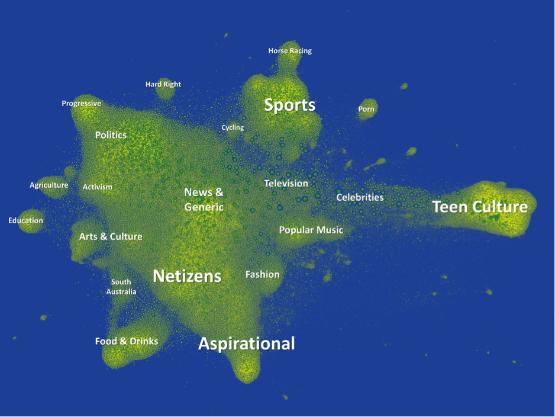


</split>

<sub>**left (Bruns et al., 2017):** Australian follow network filtered for **accounts with over 1000 followees + followers**. Labels based on **close reading of profile descriptions**</sub>

<sub>**right (Münch, 2019):** community graph of communities with degree > 10,000, based on modularity maximisation for the **full Australian follow network** (> 2 million accounts). Labels based on **keyword extraction from tweets by 10% of accounts from each community**</sub>

<aside class="notes"><ul>
<li>left: visualisation of Australian Twitter follow network, filtered</li>
<li>the denser connected nodes are, the closer together</li>
<li>emerging clusters of high density</li>
<li>labels: close reading 100 profile descriptions per cluster</li>
<li>right: faster algorithm for community detection based on same principle</li>
<li>unfiltered</li>
<li>community graph of best-connected and largest communities</li>
<li>labels: automatic keyword detection</li>
<li>shows similar, almost same structures, e.g. porn, teens, hard-right, politics -&gt; validates community detection and labelling method for later use</div></li>
</ul>
</aside></script></section><section data-markdown><script type="text/template"><!-- .slide: class="drop" -->
<div class="" style="position: absolute; left: 0px; top: 0px; height: 1080px; width: 1920px; min-height: 1080px; display: flex; flex-direction: column; align-items: center; justify-content: center" absolute="true">

### Keyword Maps

* based on tweets by accounts in community-cores (containing ca. 10% of respective community) from 10-19 February 2017
* done for 53 communities containing over 1000 accounts

<aside class="notes"><ul>
<li>automatic keyword extraction enabled deeper dive into topical connections</li>
<li>following figures done for all 53 communities with more than 1000 accounts, will be available online, exemplifying analysis here with only two communities</div></li>
</ul>
</aside></script></section><section data-markdown><script type="text/template"><!-- .slide: class="drop" -->
<div class="" style="position: absolute; left: 0px; top: 0px; height: 1080px; width: 1920px; min-height: 1080px; display: flex; flex-direction: column; align-items: center; justify-content: center" absolute="true">

<split even >

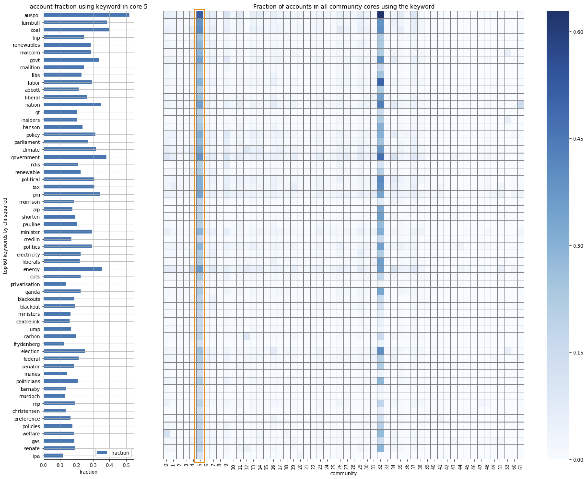

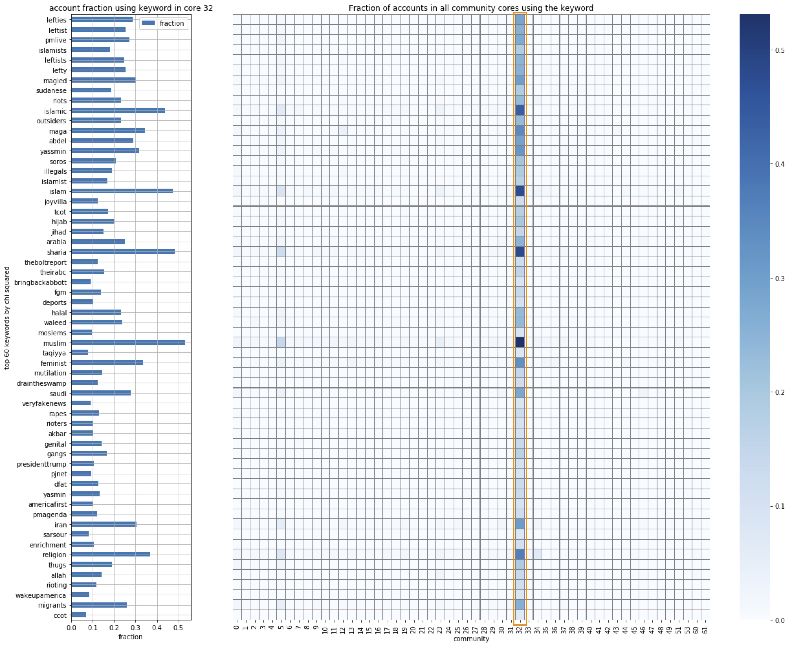


</split>

- left side of each figure: most distinct 60 keywords and the fraction of accounts having used them in the community core in focus
- right side of each figure: heatmap showing keyword use in all other communities
</div></script></section><section data-markdown><script type="text/template"><!-- .slide: class="drop" -->
<div class="" style="position: absolute; left: 0px; top: 0px; height: 1080px; width: 1920px; min-height: 1080px; display: flex; flex-direction: column; align-items: center; justify-content: center" absolute="true">

<split even >
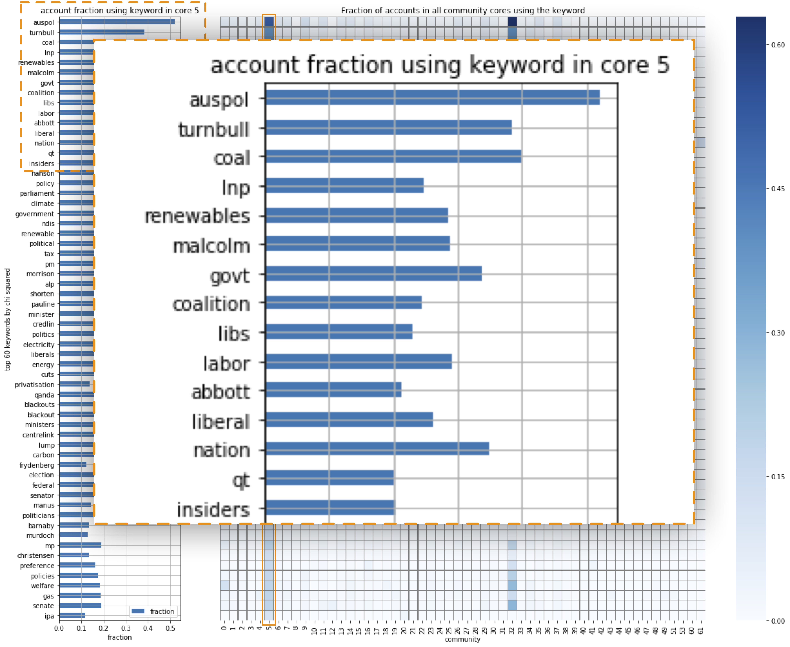


</split>

left side: Australian politics, as by the extracted keywords
</div></script></section><section data-markdown><script type="text/template"><!-- .slide: class="drop" -->
<div class="" style="position: absolute; left: 0px; top: 0px; height: 1080px; width: 1920px; min-height: 1080px; display: flex; flex-direction: column; align-items: center; justify-content: center" absolute="true">

<split even >


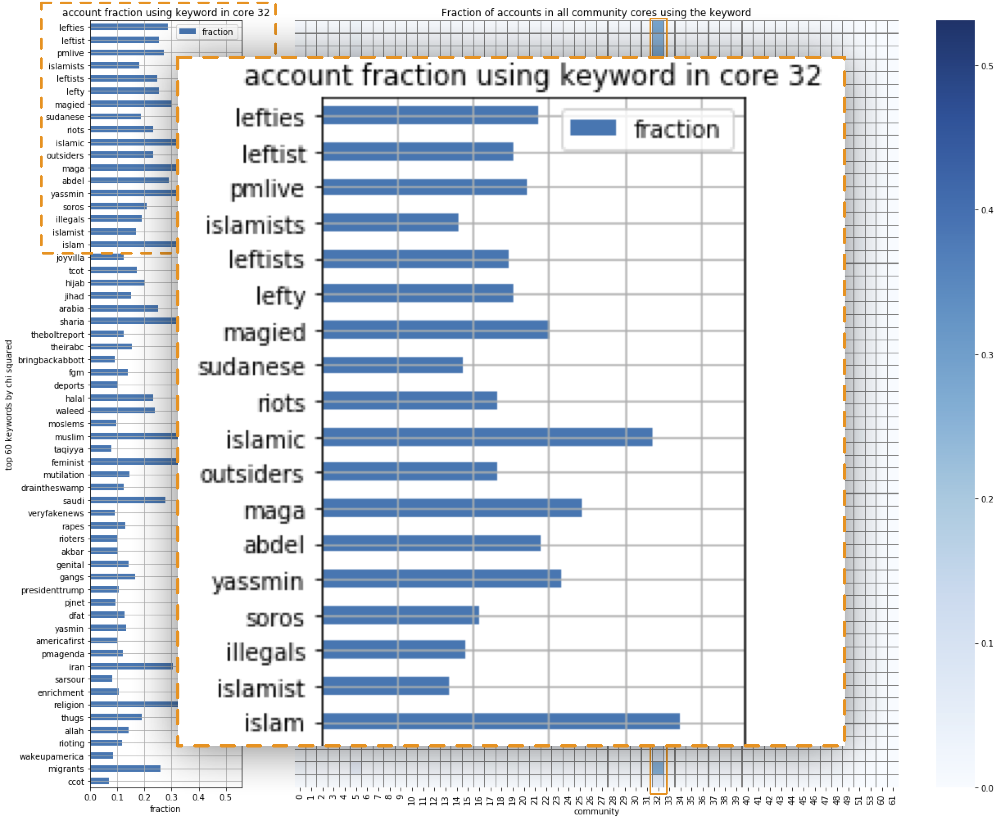

</split>


right side: hard-right politics cluster

<aside class="notes"><ul>
<li>keywords as easy to interpret as this for almost all other communities as well</div></li>
</ul>
</aside></script></section><section data-markdown><script type="text/template"><!-- .slide: class="drop" -->
<div class="" style="position: absolute; left: 0px; top: 0px; height: 1080px; width: 1920px; min-height: 1080px; display: flex; flex-direction: column; align-items: center; justify-content: center" absolute="true">

<split even >


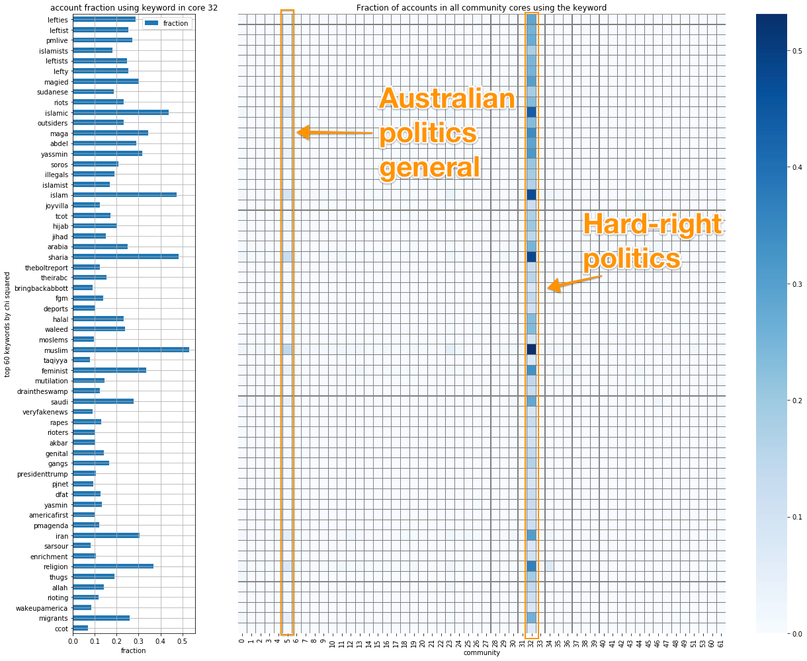

</split>

- visible: one-way relationship regarding topical keywords
- hard-right uses keywords from politics, but not the other way round
- single keywords related to Islam and migrants make it into mainstream discussion
- critique of Islam and immigration as spearhead to enter mainstream discussion?
</div></script></section><section data-markdown><script type="text/template"><!-- .slide: class="drop" -->
<div class="" style="position: absolute; left: 0px; top: 0px; height: 1080px; width: 1920px; min-height: 1080px; display: flex; flex-direction: column; align-items: center; justify-content: center" absolute="true">

### Adjacency Map

<aside class="notes"><ul>
<li>connection between hard-right and politics also visible in another explored possibility to visualise a network</li>
<li>more common in natural sciences</div></li>
</ul>
</aside></script></section><section data-markdown><script type="text/template"><!-- .slide: class="drop" -->
<div class="" style="position: absolute; left: 0px; top: 0px; height: 1080px; width: 1920px; min-height: 1080px; display: flex; flex-direction: column; align-items: center; justify-content: center" absolute="true">

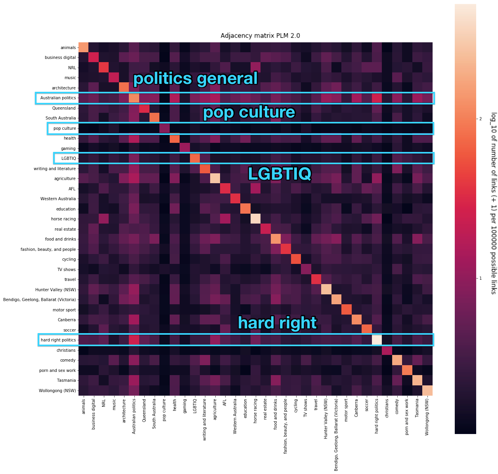


- shows how strongly connected communities are, the lighter the better
- examples: pop culture: with music, and TV shows; politics through whole network; hard right: high inner density, strongly connected with politics

<aside class="notes"><ul>
<li>advantages: better overview over connections, example LGBTIQ</li>
<li>visible: density approach of modularity maximisation</div></li>
</ul>
</aside></script></section><section data-markdown><script type="text/template"><!-- .slide: class="drop" -->
<div class="" style="position: absolute; left: 0px; top: 0px; height: 1080px; width: 1920px; min-height: 1080px; display: flex; flex-direction: column; align-items: center; justify-content: center" absolute="true">

### Epistemological Problem

#### modularity maximisation <-> echo chamber

"Networks with high modularity have dense connections between the nodes within modules but sparse connections between nodes in different modules." (Wikipedia, "Modularity (networks)", 11.3.2018)

“An echo chamber comes into being where a group of participants _choose to preferentially connect_ with each other, to the exclusion of outsiders.” (Bruns, 2017)

==> significancy problem, as the underlying definition of modularity maximisation is equivalent with echo chamber definition by Bruns
</div></script></section><section data-markdown><script type="text/template"><!-- .slide: class="drop" -->
<div class="" style="position: absolute; left: 0px; top: 0px; height: 1080px; width: 1920px; min-height: 1080px; display: flex; flex-direction: column; align-items: center; justify-content: center" absolute="true">

### Epistemological Implications

* pattern is known, easy to interpret (+)
* efficient (+)
* actually echo-chamber detection method (-)
* resolution limit: either might split up large communities, or ignore small communities (-)
* no statistical tests to distinguish noise from structure, danger of detecting patterns that are not there (apophenia) (-)

<split even >


</split>
</div></script></section><section data-markdown><script type="text/template"><!-- .slide: class="drop" -->
<div class="" style="position: absolute; left: 0px; top: 0px; height: 1080px; width: 1920px; min-height: 1080px; display: flex; flex-direction: column; align-items: center; justify-content: center" absolute="true">

## Part 2: Alternative Community Detection Approach
</div></script></section><section data-markdown><script type="text/template"><!-- .slide: class="drop" -->
<div class="" style="position: absolute; left: 0px; top: 0px; height: 1080px; width: 1920px; min-height: 1080px; display: flex; flex-direction: column; align-items: center; justify-content: center" absolute="true">

#### Nested Stochastic Block Model (SBM) Inference

<split even gap="1">

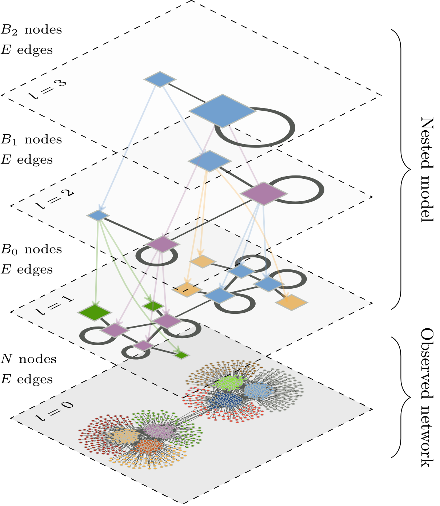


* SBM inference does not look for specific patterns (+-)
* rather grouping nodes with similar 'roles', i.e. connection patterns (think: periphery, centre, bridge, echo chamber) (+)
* hierarchical: circumvents resolution limit (+)
* statistically safeguarded from spotting patterns that are not there (apophenia) (+)
* patterns unknown, analysis after detection, harder to interpret (-)

</split>

<sub>figure from Peixoto (2017)</sub>
</div></script></section><section data-markdown><script type="text/template"><!-- .slide: class="drop" -->
<div class="" style="position: absolute; left: 0px; top: 0px; height: 1080px; width: 1920px; min-height: 1080px; display: flex; flex-direction: column; align-items: center; justify-content: center" absolute="true">

## Results
</div></script></section><section data-markdown><script type="text/template"><!-- .slide: class="drop" -->
<div class="" style="position: absolute; left: 0px; top: 0px; height: 1080px; width: 1920px; min-height: 1080px; display: flex; flex-direction: column; align-items: center; justify-content: center" absolute="true">

### Hierarchy Tree and Adjacency Map

<split even >

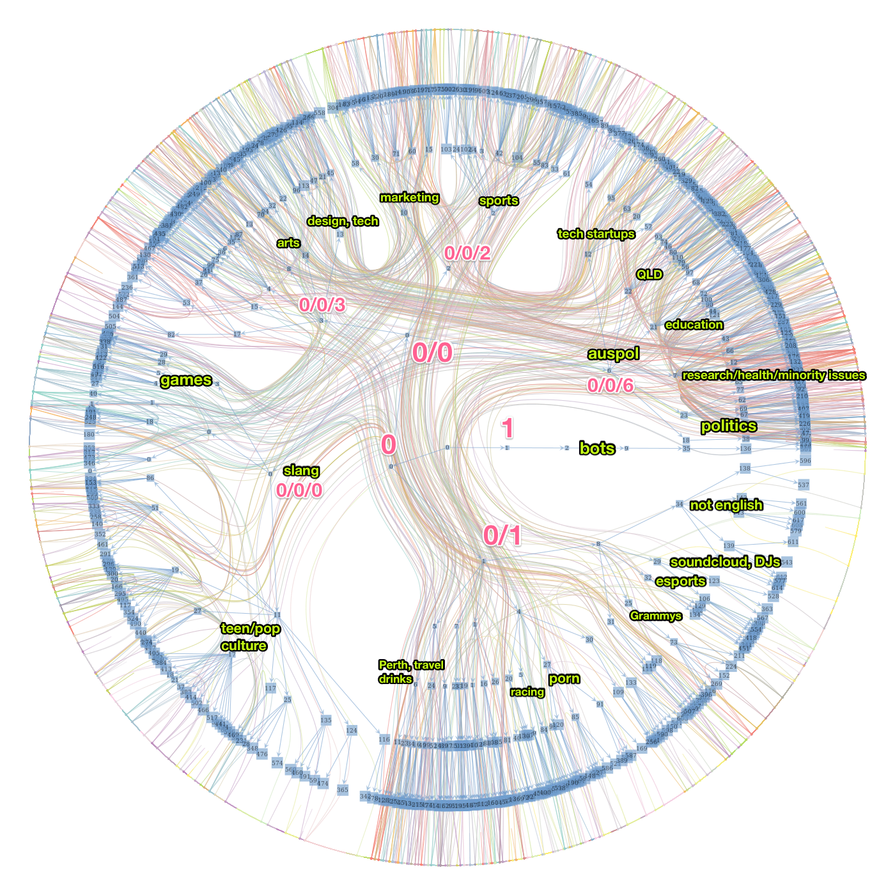


</split>


<aside class="notes"><ul>
<li>filtered network &gt; 1000, follow network, hierarchical network visualisation</li>
<li>left: explain levels, edges bundled by source and destination</li>
<li>labels based on same keyword detection method as before, however with tweets by all accounts</li>
<li>go quickly through tree</li>
<li>right: visualises grouping on level 1 with adjacency matrix, as above</li>
<li>hierarchy visible, larger blocks containing smaller blocks with similar connection patterns </li>
<li>teens also here separate</li>
<li>only block spanning all seems to be entertainment</li>
<li>light diagonal represents some justification to use density as heuristic</div></li>
</ul>
</aside></script></section><section data-markdown><script type="text/template"><!-- .slide: class="drop" -->
<div class="" style="position: absolute; left: 0px; top: 0px; height: 1080px; width: 1920px; min-height: 1080px; display: flex; flex-direction: column; align-items: center; justify-content: center" absolute="true">

### Treemaps

### hierarchical visualisation of keywords used by accounts in blocks on every level
</div></script></section><section data-markdown><script type="text/template"><!-- .slide: class="drop" -->
<div class="" style="position: absolute; left: 0px; top: 0px; height: 1080px; width: 1920px; min-height: 1080px; display: flex; flex-direction: column; align-items: center; justify-content: center" absolute="true">

<split wrap="3">
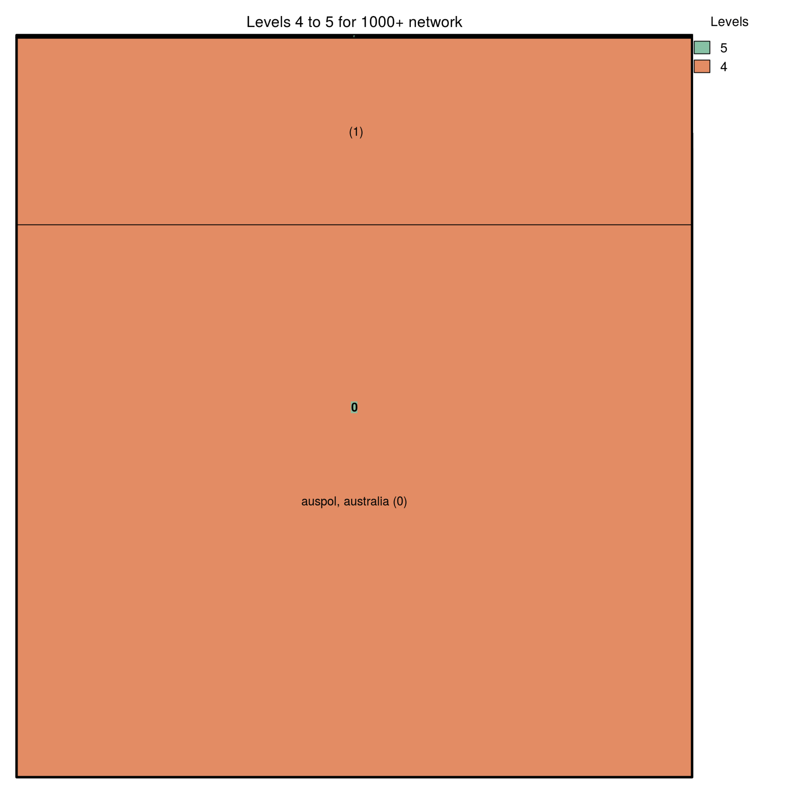


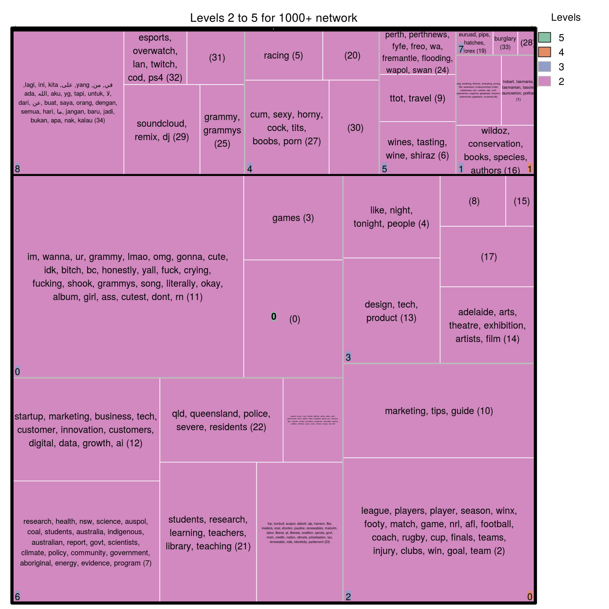


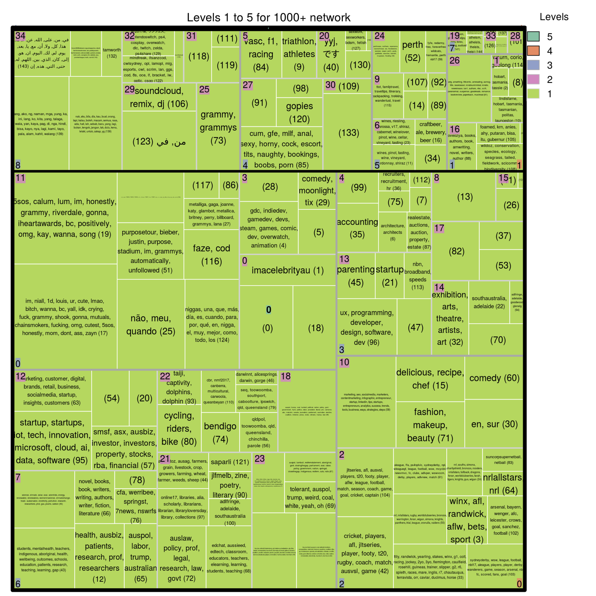


</split>

<aside class="notes"><p>to provide a more and more detailed view on the topics discussed in the Australian Twittersphere during the analysed timeframe the lower the level</p>
</div></aside></script></section><section data-markdown><script type="text/template"><!-- .slide: class="drop" -->
<div class="" style="position: absolute; left: 0px; top: 0px; height: 1080px; width: 1920px; min-height: 1080px; display: flex; flex-direction: column; align-items: center; justify-content: center" absolute="true">


* size of blocks represents active accounts, keywords used by at least 5% of active accounts in block 
* visible: divide in periphery & centre; dominance of auspol
</div></script></section><section data-markdown><script type="text/template"><!-- .slide: class="drop" -->
<div class="" style="position: absolute; left: 0px; top: 0px; height: 1080px; width: 1920px; min-height: 1080px; display: flex; flex-direction: column; align-items: center; justify-content: center" absolute="true">


politics and sports become clearly visible
</div></script></section><section data-markdown><script type="text/template"><!-- .slide: class="drop" -->
<div class="" style="position: absolute; left: 0px; top: 0px; height: 1080px; width: 1920px; min-height: 1080px; display: flex; flex-direction: column; align-items: center; justify-content: center" absolute="true">

<split even >


</split>

level 2: porn, teens, startups, politics

level 1: sports now divided into different forms of sport (e.g. European Soccer vs AFL)
</div></script></section><section data-markdown><script type="text/template"><!-- .slide: class="drop" -->
<div class="" style="position: absolute; left: 0px; top: 0px; height: 1080px; width: 1920px; min-height: 1080px; display: flex; flex-direction: column; align-items: center; justify-content: center" absolute="true">


</div></script></section><section data-markdown><script type="text/template"><!-- .slide: class="drop" -->
<div class="" style="position: absolute; left: 0px; top: 0px; height: 1080px; width: 1920px; min-height: 1080px; display: flex; flex-direction: column; align-items: center; justify-content: center" absolute="true">


- most detailed level, zoomed in on sports
- now visible special interests such as golf, track athletics, or european soccer
</div></script></section><section data-markdown><script type="text/template"><!-- .slide: class="drop" -->
<div class="" style="position: absolute; left: 0px; top: 0px; height: 1080px; width: 1920px; min-height: 1080px; display: flex; flex-direction: column; align-items: center; justify-content: center" absolute="true">

## Application to Theory (example): Networked Public Sphere

<aside class="notes"><p>To close the circle: one of more examples of use for theory based on strong empirical evidence</p>
</div></aside></script></section><section data-markdown><script type="text/template"><!-- .slide: class="drop" -->
<div class="" style="position: absolute; left: 0px; top: 0px; height: 1080px; width: 1920px; min-height: 1080px; display: flex; flex-direction: column; align-items: center; justify-content: center" absolute="true">

<split even >


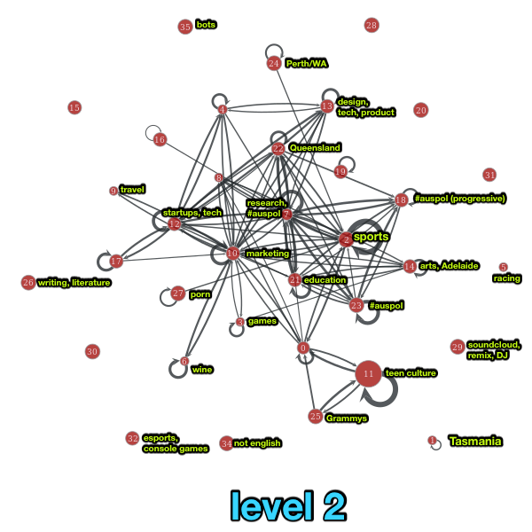

</split>

- confirmation of homophily principle, as topics clearly emerge just from the follow network
- block-graph on level 3, reminiscent of mainstream 'mountain' and special interest 'slopes and valleys' as postulated by Bruns (2008)
- issue-publics and smaller communities become visible on right, level 2

<aside class="notes"><p>besides the Epistemological implications discussed before:</p>
<ul>
<li>possible to revisit and extend theories about a networked public sphere</li>
<li>left: block-graph from level 3, reminiscent of mainstream mountain and special interest slopes</li>
<li>issue-publics and smaller communities become visible on right, level 2</li>
<li>We see that hierarchical algorithms make it possible to investigate theories about a networked public sphere with different forms of publics on different macro-, meso-, and micro-scales</li>
<li>closer inspection of connections of these communities and the topics that they talk about over time will help assessing and developing theories about the networked public sphere</div></li>
</ul>
</aside></script></section></section><section ><section data-markdown><script type="text/template"><!-- .slide: class="drop" -->
<div class="" style="position: absolute; left: 0px; top: 0px; height: 1080px; width: 1920px; min-height: 1080px; display: flex; flex-direction: column; align-items: center; justify-content: center" absolute="true">

# 8. What is it good for?


<aside class="notes"><p>let&#39;s reflect a bit on what happened after having gone sucessfully through the cycle 2 times</p>
</div></aside></script></section><section data-markdown><script type="text/template"><!-- .slide: class="drop" -->
<div class="" style="position: absolute; left: 0px; top: 0px; height: 1080px; width: 1920px; min-height: 1080px; display: flex; flex-direction: column; align-items: center; justify-content: center" absolute="true">

## What is it good for?


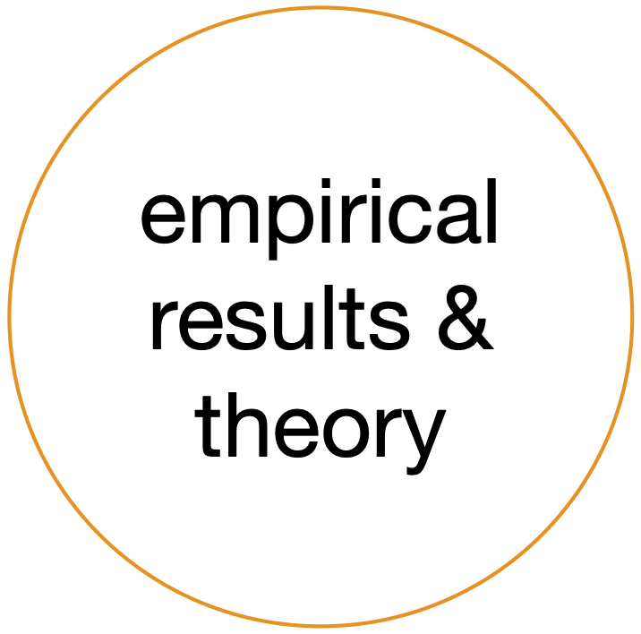


<aside class="notes"><ul>
<li>actually too many empirical results even for the analysis in the thesis</li>
<li><ol>
<li>study: insights about virality of the events and identified important actors</li>
</ol>
</li>
<li><ol start="2">
<li>study: detailed overview of the Australian Twittersphere and association of all accounts with communities for further analysis</li>
</ol>
</li>
<li>exemplified some of the opportunities to validate and extend theory</div></li>
</ul>
</aside></script></section><section data-markdown><script type="text/template"><!-- .slide: class="drop" -->
<div class="" style="position: absolute; left: 0px; top: 0px; height: 1080px; width: 1920px; min-height: 1080px; display: flex; flex-direction: column; align-items: center; justify-content: center" absolute="true">

## What is it good for?


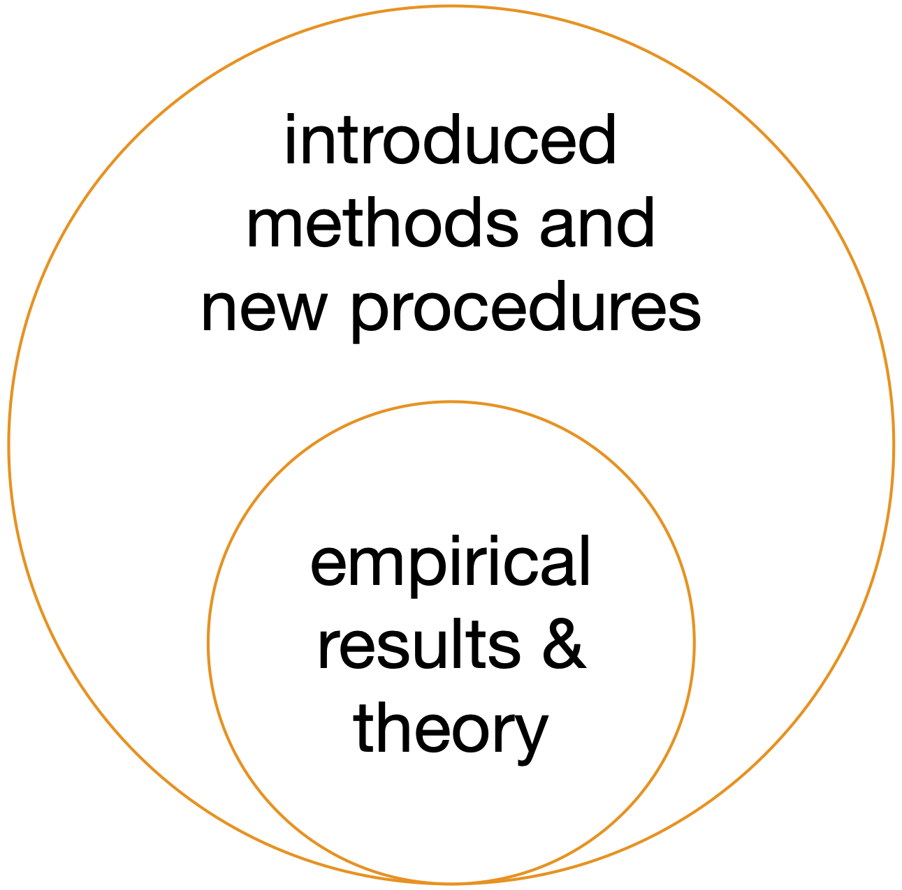


<aside class="notes"><ul>
<li>longer term outcome, and actual aim of project: methods and procedures</li>
<li>for example: enable us to categorise hashtags by their virality, or inspect evolution of topics in the Australian Twittersphere over time</div></li>
</ul>
</aside></script></section><section data-markdown><script type="text/template"><!-- .slide: class="drop" -->
<div class="" style="position: absolute; left: 0px; top: 0px; height: 1080px; width: 1920px; min-height: 1080px; display: flex; flex-direction: column; align-items: center; justify-content: center" absolute="true">

## What is it good for?


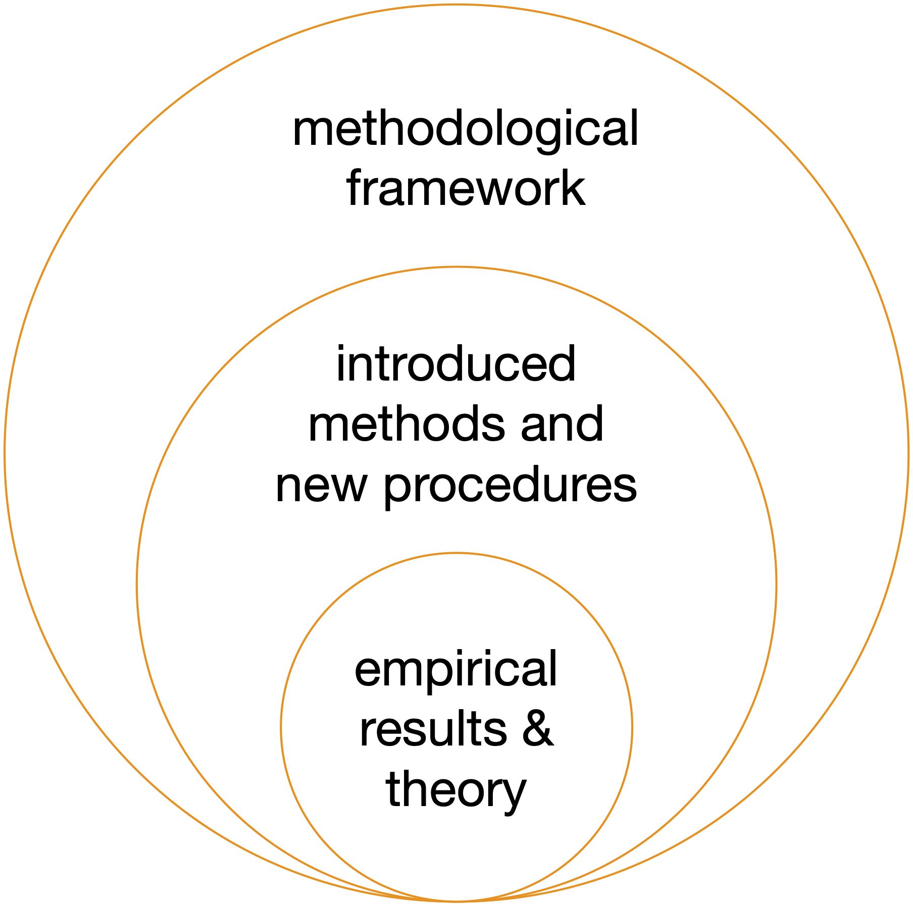


<aside class="notes"><ul>
<li>not aimed for first, but most fundamental: outlined methodological Framework</li>
<li>hopefully enables, when further developed, interdisciplinary researchers or teams to overcome disciplinary divides</div></li>
</ul>
</aside></script></section><section data-markdown><script type="text/template"><!-- .slide: class="drop" -->
<div class="" style="position: absolute; left: 0px; top: 0px; height: 1080px; width: 1920px; min-height: 1080px; display: flex; flex-direction: column; align-items: center; justify-content: center" absolute="true">

## Challenge 1: How To Translate theory?

* mostly straightforward: model entities as nodes, interactions as edges(, context as layers), or semantically: subjects/nouns as actors, actions/verbs as links
* but: good background knowledge about network analysis methods as well as theories needed to construct useful models
* especially suitable for theories about interaction patterns between individuals/entities, e.g., information diffusion, audience behaviour, publics, and communities
* less suitable for theories that deal with phenomena beyond observable interactions, e.g., media effects (hint: Machine Learning ☝️)

<aside class="notes"><p>finally, let&#39;s come back to answers to the research questions
How to translate theory?</p>
</div></aside></script></section><section data-markdown><script type="text/template"><!-- .slide: class="drop" -->
<div class="" style="position: absolute; left: 0px; top: 0px; height: 1080px; width: 1920px; min-height: 1080px; display: flex; flex-direction: column; align-items: center; justify-content: center" absolute="true">

## Challenge 2: How To Apply Network Science?

* methodological (i.e., epistemological + teleological) framework needed for sustainable integration of methods and theory
* 'rule-based' researchers need to:
	- dare to 'jump over the abductive gap', interpret results
	- understand context
* 'responsive' researchers need:
	- true understanding, not only application, of rule-based methods as providers of patterns
	- more math and programming skills
</div></script></section><section data-markdown><script type="text/template"><!-- .slide: class="drop" -->
<div class="" style="position: absolute; left: 0px; top: 0px; height: 1080px; width: 1920px; min-height: 1080px; display: flex; flex-direction: column; align-items: center; justify-content: center" absolute="true">

Practical steps (variations possible):

1. Translating theory;
2. model and collect data; (<-- practical 1)
3. exploration (e.g., visualisation); (<-- practical 2)
4. verification (measuring/content analysis); (<-- practical 3)
5. validation with (mathematical/agent-based) models and experiments;
6. revise theory, rinse, repeat
</div></script></section><section data-markdown><script type="text/template"><!-- .slide: class="drop" -->
<div class="" style="position: absolute; left: 0px; top: 0px; height: 1080px; width: 1920px; min-height: 1080px; display: flex; flex-direction: column; align-items: center; justify-content: center" absolute="true">

## Challgenge 3: But why?

* Network science is able to generate, and detect, patterns that can drive the abductive generation, and the inductive/deductive verification of hypotheses central to theory about public communication, especially on a society-wide scale.
* Network science is particularly important for dealing with problems of organised complexity.
* Public communication faces society-wide challenges (hate-speech, extremism, fake news, polarisation, …) due to the increased structural/organised complexity of a networked public sphere.
</div></script></section><section data-markdown><script type="text/template">


</script></section></section><section ><section data-markdown><script type="text/template"><!-- .slide: class="drop" -->
<div class="" style="position: absolute; left: 0px; top: 0px; height: 1080px; width: 1920px; min-height: 1080px; display: flex; flex-direction: column; align-items: center; justify-content: center" absolute="true">

# References / Further Reading
</div></script></section><section data-markdown><script type="text/template"><!-- .slide: class="drop" -->
<div class="" style="position: absolute; left: 0px; top: 0px; height: 1080px; width: 1920px; min-height: 1080px; display: flex; flex-direction: column; align-items: center; justify-content: center" absolute="true">

Berry, D. M. (2011). The computatonal turn: thinking about the digital humanities. Culture Machine, 12, 1–22. Retrieved from http://www.culturemachine.net/index.php/cm/article/view/440/470

Bruns, A. (2008). Life beyond the public sphere: towards a networked model for political deliberation. Information Polity, 13, 71–85.

Bruns, A. (2017). Echo Chamber? What Echo Chamber? Reviewing the Evidence. In Future of Journalism 2017. Cardiff, UK. Retrieved from https://eprints.qut.edu.au/113937/

Bruns, A., Moon, B., Münch, F., & Sadkowsky, T. (2017). The Australian Twittersphere in 2016: Mapping the Follower/Followee Network. Social Media + Society, 3(4). http://doi.org/10.1177/2056305117748162

Dixon, D. (2012). Analysis tool or research methodology: is there an epistemology for patterns? In Understanding Digital Humanities. Palgrave Macmillan.

Goel, S., Anderson, A., Hofman, J., & Watts, D. (2015). The structural virality of online diffusion. Management Science. Retrieved from http://dx.doi.org/10.1287/mnsc.2015.2158

Habermas, J. (2006). Political communication in media society: does democracy still enjoy an epistemic dimension? The impact of normative theory on empirical research. Communication Theory, 16(4), 411–426. 
http://doi.org/10.1111/j.1468-2885.2006.00280.x
</div></script></section><section data-markdown><script type="text/template"><!-- .slide: class="drop" -->
<div class="" style="position: absolute; left: 0px; top: 0px; height: 1080px; width: 1920px; min-height: 1080px; display: flex; flex-direction: column; align-items: center; justify-content: center" absolute="true">

Halavais, A. (2015). Bigger sociological imaginations: framing big social data theory and methods. Information, Communication & Society, 18(5), 583–594. http://doi.org/10.1080/1369118X.2015.1008543

Luhmann, N. (1997). Die Gesellschaft der Gesellschaft. Frankfurt am Main: Suhrkamp.

McQuail, D. (2010). Mass communication theory (6th ed.). SAGE Publications.

Münch, F. V. (2019). _Measuring the Networked Public – Exploring Network Science Methods for Large Scale Online Media Studies_ [PhD thesis, Queensland University of Technology]. [https://doi.org/10.5204/thesis.eprints.125543](https://doi.org/10.5204/thesis.eprints.125543)

Onwuegbuzie, A. J., & Leech, N. L. (2005). On Becoming a Pragmatic Researcher: The Importance of Combining Quantitative and Qualitative Research Methodologies. International Journal of Social Research Methodology, 8(5), 375–387. http://doi.org/10.1080/13645570500402447

Peixoto, T. P. (2017). The graph-tool python library. http://doi.org/10.6084/M9.FIGSHARE.1164194.V14

Sechrest, L., & Sidani, S. (1995). Quantitative and qualitative methods: Is There an Alternative? Evaluation and Program Planning, 18(1), 77–87. http://doi.org/10.1016/0149-7189(94)00051-X

Weaver, W. (1948). Science and complexity. American Scientist, 36(4), 536–544. Retrieved from http://www.jstor.org/stable/27826254
</div></script></section></section><section  data-markdown><script type="text/template"><!-- .slide: class="drop" -->
<div class="" style="position: absolute; left: 0px; top: 0px; height: 1080px; width: 1920px; min-height: 1080px; display: flex; flex-direction: column; align-items: center; justify-content: center" absolute="true">

# Thanks!

## üññ

### Twitter/Mastodon: @flxvctr(@mas.to)
</div></script></section><section  data-markdown><script type="text/template">
</script></section></div>
    </div>

    <script src="dist/reveal.js"></script>

    <script src="plugin/markdown/markdown.js"></script>
    <script src="plugin/highlight/highlight.js"></script>
    <script src="plugin/zoom/zoom.js"></script>
    <script src="plugin/notes/notes.js"></script>
    <script src="plugin/math/math.js"></script>
	<script src="plugin/mermaid/mermaid.js"></script>
	<script src="plugin/chart/chart.min.js"></script>
	<script src="plugin/chart/plugin.js"></script>
	<script src="plugin/menu/menu.js"></script>
	<script src="plugin/customcontrols/plugin.js"></script>
	<script src="plugin/chalkboard/plugin.js"></script>

    <script>
      function extend() {
        var target = {};
        for (var i = 0; i < arguments.length; i++) {
          var source = arguments[i];
          for (var key in source) {
            if (source.hasOwnProperty(key)) {
              target[key] = source[key];
            }
          }
        }
        return target;
      }

	  function isLight(color) {
		let hex = color.replace('#', '');

		// convert #fff => #ffffff
		if(hex.length == 3){
			hex = `${hex[0]}${hex[0]}${hex[1]}${hex[1]}${hex[2]}${hex[2]}`;
		}

		const c_r = parseInt(hex.substr(0, 2), 16);
		const c_g = parseInt(hex.substr(2, 2), 16);
		const c_b = parseInt(hex.substr(4, 2), 16);
		const brightness = ((c_r * 299) + (c_g * 587) + (c_b * 114)) / 1000;
		return brightness > 155;
	}

	var bgColor = getComputedStyle(document.documentElement).getPropertyValue('--r-background-color').trim();
	var isLight = isLight(bgColor);

	if(isLight){
		document.body.classList.add('has-light-background');
	} else {
		document.body.classList.add('has-dark-background');
	}

      // default options to init reveal.js
      var defaultOptions = {
        controls: true,
        progress: true,
        history: true,
        center: true,
        transition: 'default', // none/fade/slide/convex/concave/zoom
        plugins: [
          RevealMarkdown,
          RevealHighlight,
          RevealZoom,
          RevealNotes,
          RevealMath.MathJax3,
		  RevealMermaid,
		  RevealChart,
		  RevealCustomControls,
		  RevealMenu,
		  RevealChalkboard, 
        ],


    	allottedTime: 120 * 1000,

		mathjax3: {
			mathjax: 'plugin/math/mathjax/tex-mml-chtml.js',
		},
		markdown: {
		  gfm: true,
		  mangle: true,
		  pedantic: false,
		  smartLists: false,
		  smartypants: false,
		},

		mermaid: {
			theme: isLight ? 'default' : 'dark',
		},

		customcontrols: {
			controls: [
				{id: 'toggle-overview',
				title: 'Toggle overview (O)',
				icon: '<i class="fa fa-th"></i>',
				action: 'Reveal.toggleOverview();'
				},
				{ icon: '<i class="fa fa-pen-square"></i>',
				title: 'Toggle chalkboard (B)',
				action: 'RevealChalkboard.toggleChalkboard();'
				},
				{ icon: '<i class="fa fa-pen"></i>',
				title: 'Toggle notes canvas (C)',
				action: 'RevealChalkboard.toggleNotesCanvas();'
				},
			]
		},
		menu: {
			loadIcons: false
		}
      };

      // options from URL query string
      var queryOptions = Reveal().getQueryHash() || {};

      var options = extend(defaultOptions, {"width":1920,"height":1080,"margin":0.04,"controls":true,"progress":true,"slideNumber":true,"transition":"none","transitionSpeed":"default","mermaid":{"themeVariables":{"fontsize":"128px"}}}, queryOptions);
    </script>

    <script>
      Reveal.initialize(options);
    </script>
  </body>

  <!-- created with Advanced Slides -->
</html>
